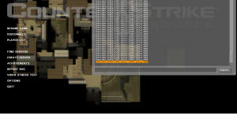

De nombreuses maps amateur circulent sans overview, ce qui est assez contraignant, d'autant plus si la map est complexe. Mais nos mappeurs ne sont pas à blâmer, car faire quelque chose d'aussi simple est un véritable calvaire. Cependant, créer un overview pourra démarquer votre map de centaines d'autres, sans compter qu'il lui donne beaucoup plus de classe. :p
Je vais, dans ce tutoriel, vous expliquer comment réaliser un parfait overview en espérant vous rendre la tâche aussi simple et compréhensible que possible, sans oublier de vous donner le maximum d'informations.
La première tâche à réaliser dans la création d'un overview est de prendre une capture d'écran (screenshot) de votre map en jeu.
Pour cela, commencez par lancer votre jeu, allez sur votre map et rejoignez n'importe quelle équipe.
En tout premier lieu, il va vous falloir binder une touche afin de prendre un screenshot correct. Pour ce faire, tapez bind TOUCHE screenshot dans votre console. Si vous n'avez pas la console, activez-la en consultant ce tutoriel.
Cela étant fait, tapez sv_cheats 1 (toujours dans la console) pour pouvoir utiliser les commandes suivantes :
cl_drawhud 0 pour masquer votre HUD (viseur, barre de santé, etc.) ;
fog_override 1 pour enlever d'éventuels effets de brouillard ;
r_drawstaticprops 0 si vous voulez que les props de votre map soient masqués.
Vous pouvez maintenant taper cl_leveloverview x pour survoler la map et prendre votre screenshot. Pour la valeur de x, commencez par 5 et augmentez ou réduisez de façon à ce que votre map soit centrée et étirée dans tout votre écran. Vous pouvez bouger la carte avec les commandes de directions normales en jeu. Vous devriez avoir quelque chose comme ceci :
Mais pas de souci, il existe une commande permettant de faire apparaître ce dit carré. Pour cela, tapez cl_leveloverviewmarker x dans votre console. Pour un écran de résolution 1280 x 1024, vous devrez donc taper cl_leveloverviewmarker 1024.
Mais, je ne vois aucun carré sur mon écran !
C'est tout à fait normal, le cadre rouge que la commande fait apparaître est considéré comme étant un élément du HUD. Vous devez donc l'afficher temporairement grâce à la commande cl_drawhud 1.
Une fois que votre image tient bien dans le cadre délimité par un trait rouge, remasquez le HUD en tapant cl_drawhud 0 dans la console, fermez celle-ci et appuyez sur votre touche bindée pour le screenshot.
Si tout s'est bien passé, vous devriez avoir le screenshot de votre map à la localisation C:\program files\steam\SteamApps\COMPTE\counter-strike source\cstrike\screenshots (si vous jouez avec Counter-Strike : Source) avec un fond noir. Pas de problème, on va le virer dans la partie suivante !
L'objectif de cette partie sera d'enlever le fond noir et de redimensionner l'image afin qu'elle soit carrée. Cette image sera l'overview final de votre map et devra porter le nom « VOTRE MAP » en format tga (ou png). Mais nous allons aussi créer une deuxième image qui sera utilisée pour le radar des joueurs dans la partie. Pour cela, il faudra simplement reprendre l'image précédente, y ajouter une teinte verte, avant de l'enregistrer sous le nom « VOTRE MAP_radar » en format tga ou png également. Ceux qui savent comment faire peuvent d'ores et déjà passer à la partie suivante. Pour les autres, je vais vous expliquer la marche à suivre avec trois logiciels : Photoshop, The GIMP et Paint.NET.
Avec Photoshop
Pour ceux qui possèdent Photoshop, la manipulation va être rapide.
Nous allons commencer par couper l'image pour qu'elle soit carrée. Pour cela, ouvrez le screenshot à l'emplacement indiqué précédemment, puis allez dans Image > Recadrer. Entrez les dimensions du carré rouge de la première partie dans le champ hauteur et largeur et 28 dans le champ résolution (en pixels par pouce). Validez l'opération. Pour supprimer le fond noir, prenez simplement l'outil « baguette magique », cliquez sur une tache noire puis appuyez sur votre touche « Suppr ». Réitérez l'opération pour chaque tache.
La première image est prête. Vous pouvez l'enregistrer sous le nom « VOTRE MAP » en format tga ou png.
Pour créer la vue radar, allez dans le menu Accentuation > Régler la couleur > Variantes de couleurs, sélectionnez « plus de vert » et validez.
Vous pouvez enregistrer cette image sous le nom « VOTRE MAP_radar » en format tga ou png.
Avec The GIMP
Si vous n'avez pas Photoshop, vous pouvez utiliser l'excellent logiciel libre et gratuit The GIMP (téléchargeable ici). Voici la marche à suivre.
Nous allons commencer par couper l'image pour qu'elle soit carrée. Pour cela, ouvrez le screenshot à l'emplacement indiqué précédemment puis prenez l'outil de sélection rectangulaire. Sélectionnez une partie de l'image de hauteur et de largeur identiques à celles du carré rouge de la première partie (aidez-vous du panel de gauche), puis faites ctrl + x (couper). Ensuite, allez dans Fichier > Nouveau, réglez la taille aux dimensions voulues et mettez un fond transparent (Options avancées > Remplir avec > Transparence). Une fois la nouvelle image créée, faites simplement ctrl + v (coller). Nous allons maintenant supprimer le fond noir. Pour cela, prenez l'outil de sélection contiguë, cliquez une tache noire, et appuyez sur « Suppr ». Faites de même avec toutes les taches.
La première image est prête. Enregistrez-la sous le nom « VOTRE MAP » au format tga ou png.
Pour créer la vue radar, il va falloir créer un nouveau calque (Calque > Nouveau calque). Laissez la largeur et la hauteur par défaut et cochez « Transparence ». Dans le panel des calques (pour l'obtenir, allez dans le menu Fenêtres > Groupes de fenêtres récemment fermés > Calques, canaux, chemins), réglez l'opacité du calque créé à 30%. Prenez ensuite l'outil de remplissage. Mettez la couleur vert foncé en couleur principale et remplissez votre calque. Enfin, dans le panel des calques, faites un clic droit sur n'importe quel calque et faites fusionner les calques visibles > Fusionner. Supprimez à nouveau toutes les taches vertes comme vu précédemment.
Vous pouvez enregistrer l'image sous le nom « VOTRE MAP_radar » en format tga ou png.
Avec Paint.NET
Vous pouvez également utiliser le logiciel gratuit Paint.NET obtenable ici.
Nous allons commencer par couper l'image pour qu'elle soit carrée. Pour cela, ouvrez le screenshot à l'emplacement indiqué précédemment, puis allez dans Image > Taille de la zone de dessin. Choisissez la largeur et la hauteur du carré rouge de la première partie, puis cliquez sur OK. Ensuite pour supprimer le fond noir, il suffit simplement de prendre l'outil « baguette magique », de cliquer sur une tache noire, puis d'appuyer sur votre touche « Suppr ». Réitérez l'opération sur chaque tache.
La première image est prête. Vous pouvez l'enregistrer sous le nom « VOTRE MAP » en format tga ou png.
Pour créer la vue radar, allez dans Calques > Nouveau calque, cliquez sur le nouveau calque dans le panel des calques (si vous n'avez pas de panel des calques, appuyez sur F7) puis cliquez sur « Propriétés » (l'icône en bas à droite) afin de régler l'opacité à 80. Remplissez ensuite le calque d'une couleur vert foncé grâce à l'outil « pot de peinture ». Enfin, dans le panel des calques, cliquez sur l'icône « Fusionner avec le calque inférieur » et reprenez la baguette magique afin de supprimer à nouveau les zones qui doivent être transparentes.
Vous pouvez enregistrer l'image sous le nom « VOTRE MAP_radar » en format tga ou png.
À ce stade, vous devriez avoir deux images, « VOTRE MAP » et « VOTRE MAP_radar », au format tga ou png.
Félicitations, vous avez réalisé la plus grosse partie du travail. ^^ Dans cette étape, il va s'agir de transformer nos images en fichiers vtf et de créer des fichiers vmt.
Nous allons également créer un fichier texte (txt), dont le rôle est de donner des informations sur le positionnement de l'overview par rapport au joueur.
Pour créer les fichiers vtf, nous aurons besoin d'un programme VTFEdit disponible ici.
Après l'avoir lancé, allez dans File > Import et sélectionnez l'image « VOTRE MAP ». Maintenant, dans le panel de gauche, cochez Clamp S et Clamp T. Enregistrez ensuite la texture sous le nom « VOTREMAP.vtf ». Réitérez l'opération pour l'image radar que vous enregistrerez sous le nom « VOTREMAP_radar.vtf ».
Les textures sont créées, place aux fichiers vmt ! Utilisez n'importe quel logiciel de traitement de texte (Notepad suffit amplement), puis faites un copier / coller des lignes suivantes :
N'oubliez pas de remplacer « VOTRE MAP » par le nom de votre map à la deuxième ligne et enregistrez votre document sous le nom « VOTRE MAP.vmt ».
Réitérez l'opération avec la vue radar en remplaçant cette fois-ci « VOTRE MAP » en deuxième ligne par « VOTREMAP_radar ». Vous pouvez enregistrer le document sous le nom « VOTRE MAP_radar.vmt ».
Et enfin, venons-en au fichier texte. Toujours avec votre logiciel de traitement de texte, faites un copier / coller des lignes suivantes :
Vous devez maintenant remplacer « X », « Y » et « SCALE » par les informations que vous avez dû noter quelque part en première partie. Si vous ne les avez pas notées, insultez-moi et recommencez tout depuis le début. :D Remplacez également les deux « VOTRE MAP » par le nom de votre map (oui, c'est toujours bon de le rappeler).
Ça y est, nous avons tous les fichiers dont nous avons besoin. :)
Il s'agit maintenant de placer tout ce joli désordre dans les dossiers prévus à cet effet (au besoin, créez-les).
Les deux fichiers .vmt et .vtf doivent aller à l'emplacement : C:\Program Files\Steam\SteamApps\COMPTE\counter-strike source\cstrike\materials\overviews
Le fichier .txt, ici : C:\Program Files\Steam\SteamApps\COMPTE\counter-strike source\cstrike esource\overviews
Si vous souhaitez jouer votre map en ligne, il va falloir soit inclure les fichiers créés dans votre fichier map (grâce à BSPZIP, par exemple), soit créer un fichier « res ».
Pour créer votre fichier « res », ouvrez un logiciel de traitement de texte pour y copier / coller ceci :
Si vous êtes là, c'est que vous avez quelque chose qui cloche (votre overview, pas vous !).
Si l'erreur que vous rencontrez ne figure pas dans les cas présentés ci-dessous, laissez un commentaire ou envoyez-moi un MP décrivant votre problème, je vous aiderai et mettrai cette partie à jour.
J'ai un damier rose et noir à la place de mon overview !
Le joueur est décalé par rapport à la mini-map !
J'ai mis ma map sur un serveur, mais les joueurs ne téléchargent pas mon overview !
Ainsi s'achève ce tutoriel. Vous avez brillamment créé un overview. :) Vous pouvez maintenant être fier d'avoir une map digne de ce nom, qui fera le bonheur de vos joueurs. N'hésitez surtout pas à commenter pour me signaler de quelconques erreurs ou des méthodes plus simples pour la partie « Édition du screenshot » (en me proposant, pourquoi pas, la marche à suivre avec d'autres logiciels).
{kind=link}
{kind=link}
{kind=link}